PP01 / Oral Defense
1:00
生成式人工智慧在建築物入口之設計與施工之研究
以台中雅園會館為例，說明 AIGC 如何從概念生成走向 BIM/IFC 整合與 GRC 施工落地。
朝陽科技大學視傳系 / 碩士論文口試版 / 40 min
Agenda / 40 min
1:00
口試簡報節奏
以「問題 → 方法 → 實證 → 貢獻」組織，讓委員快速看見研究價值與可驗證性。
Problem
2:00
AIGC 的建築價值，卡在「可施工性」
AIGC 能快速產生概念，但影像本身缺少幾何拓樸、材料厚度、構件屬性與施工邏輯。
- 生成影像偏向視覺語意，BIM/IFC 需要可驗證資料
- 自由曲面入口牽涉造型、結構、材料與現場工序
- 研究目標是建立從生成到建構的轉譯流程
Research Questions
2:00
三個研究問題
研究問題彼此銜接，從設計生成、資料整合一路推進到施工落地。
01RQ1：如何以 AIGC 生成具設計語意的建築構想？
02RQ2：AIGC 生成內容能否透過開源軟體與開放格式整合進 BIM/IFC？
03RQ3：AIGC-BIM-GRC 是否能形成可重現且具擴展性的開放流程？
Case
2:00
為什麼選雅園會館入口
這是一個具備真實設計壓力、自由曲面複雜度與施工限制的案例，可以檢驗流程是否真正落地。
- 高曲率自由曲面，具雕塑性與入口儀式感
- 原始 DWG、3ds Max 高模存在對位與拓樸問題
- GRC 施工需面對分件、厚度、鋼構偏差與工期壓力
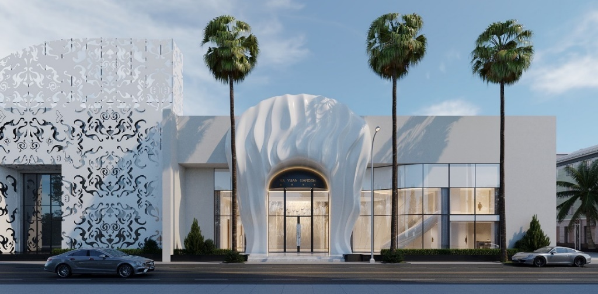
雅園會館入口效果與現況比對Literature Gap
2:00
文獻缺口：從圖像生成到工程資訊的中段不足
既有研究多談概念生成或單點工具，較少完整處理語意、幾何、IFC 與材料施工之間的轉譯。
- AIGC 研究偏重視覺輸出，較少處理建構資料
- BIM/IFC 研究重視互通，但與生成式設計連結仍不足
- 自由曲面材料落地需要可操作的工法與驗證節點
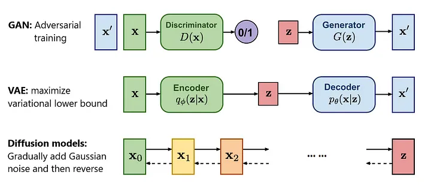
多代理與 Text-to-BIM 文獻脈絡Method
2:00
研究方法：混合研究與技術設計驗證
本研究以文獻整合建立理論框架，再以雅園會館案例進行流程建構與技術驗證。
- 理論層：文獻分析與設計理論整合
- 系統層：建立開放式 AIGC-BIM 流程模型
- 實踐層：以雅園會館驗證流程可行性
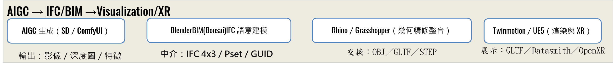
研究方法層級與策略對照Framework
2:00
三層概念模型：生成層、整合層、落地層
流程把 AIGC 的語意輸出轉成幾何模型，再轉入 BIM/IFC 與材料施工。
- 生成層：AIGC 進行意象生成與語意提示
- 整合層：Blender、Rhino、Revit/Bonsai 完成幾何與資訊整合
- 落地層：GRC/UHPC、Web/XR 與施工驗證
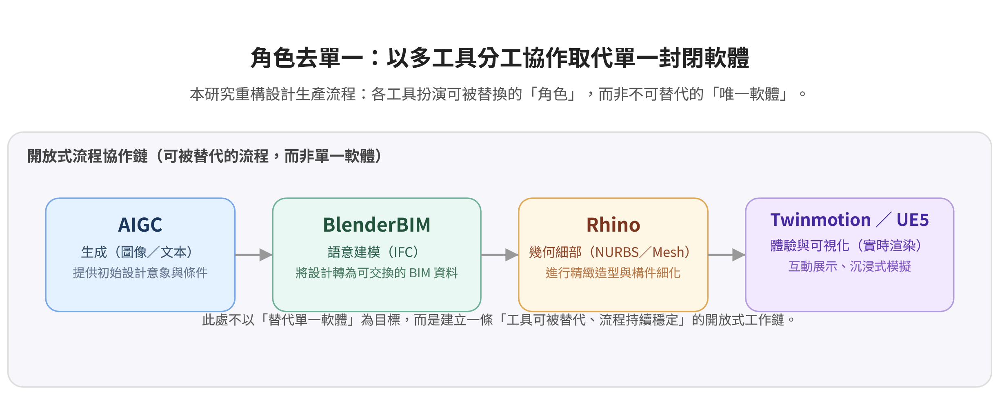
三層概念模型OABIF
3:00
OABIF：Open AIGC-BIM Integration Framework
以流程為平台，將資料標準、節點自動化與版本治理組成可審計、可替換、可重現的生產鏈。
- Data：IFC、GLB/OpenUSD、JSON/CSV
- Generation：Stable Diffusion、ComfyUI、Blender Python
- Integration：BlenderBIM、Rhino/Grasshopper、IfcOpenShell
- Validation：Twinmotion/UE5、ifc.js、Web/XR
- Governance：Git、CI、授權與版本治理
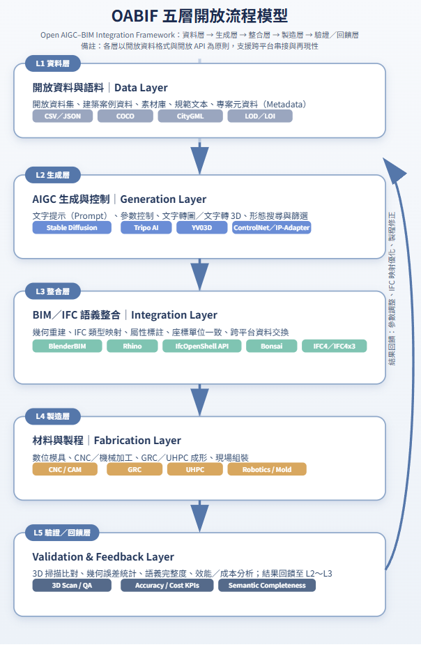
OABIF 五層開放流程模型Toolchain
2:00
工具鏈不是目的，流程可重現才是目的
研究採用開源與商用工具並行，目標是讓每個節點都能被檢查、替換與重建。
- AIGC：Midjourney、Stable Diffusion、ComfyUI
- 幾何與 BIM：Blender/Bonsai、Rhino、Revit、IfcOpenShell
- 展示與驗證：GLB、ifc.js、Twinmotion、UE5、Web3D
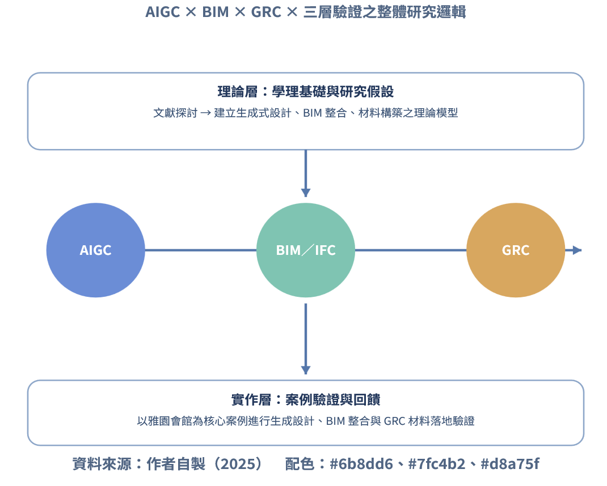
從 AIGC 到 BIM/XR 的流程關係Validation
2:00
驗證指標：把流程變成可檢核的研究
本研究以幾何精度、IFC 語意、自動化、重現性與 Web/XR 效能作為流程檢核軸線。
- 幾何精度目標：相對偏差小於等於 10 mm
- IFC 語意覆蓋率目標：大於等於 90%
- 重現成功率目標：同版本重建 100%
- Web/XR 效能：首屏小於等於 5 秒，場景大於等於 30 FPS
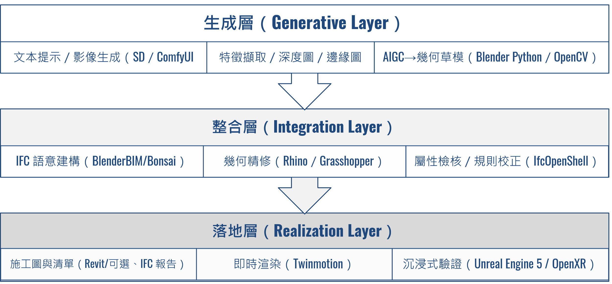
研究驗證流程與指標Case Layer 1
3:00
設計生成層：AIGC 作為語意擴張工具
AIGC 在本案中不直接輸出工程模型，而是協助生成造型語彙、光影方向與風格候選。
- 多輪影像生成縮短初期構想迭代時間
- 設計師篩選光感、曲面厚薄、入口框景與視覺飽和度
- AIGC 提供語意方向，工程模型仍需重建
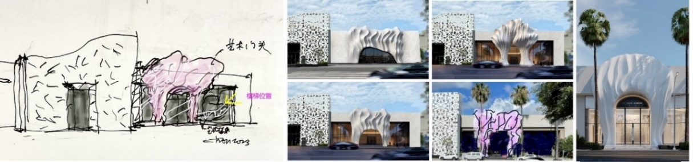
AIGC 設計流程與設計語彙探索Data Problem
2:00
原始資料問題：DWG 與高模無法直接施工
原始設計資料存在 Z 軸錯誤、尺度對位困難、高面數與拓樸破碎等問題。
- DWG Z 軸錯誤導致 2D/3D 對位不可靠
- 3ds Max 高模只適合視覺表現，不適合分件與 IFC 屬性標註
- 因此必須建立可追溯的幾何與語意主幹
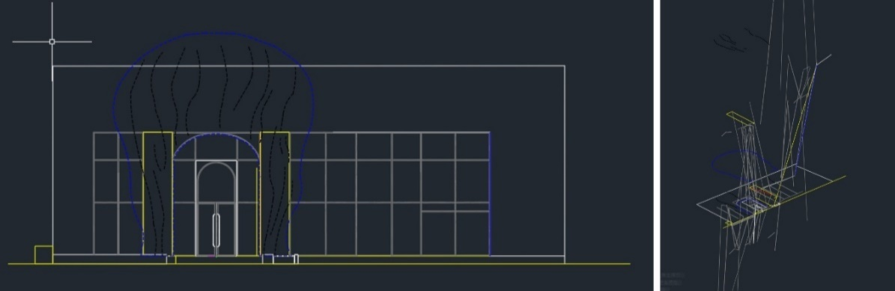
DWG 圖資與模型對位問題Case Layer 2
3:00
模型整合層：Blender → Rhino → Revit
模型整合的目標是把視覺模型轉成可編輯、可分件、可定位、可標註的工程模型。
- Blender：拓樸簡化、補面、封閉模型、法線修正
- Rhino/Sub-D：自由曲面工程化重建與分件邏輯
- Revit/BIM：標高、軸線、結構骨架與施工圖基準
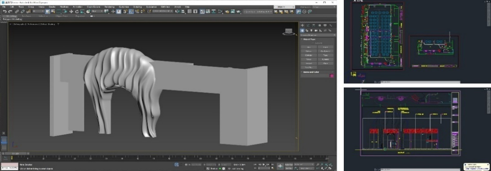
模型整合流程：AIGC / Blender / Rhino / BIMMesh Cleanup
2:00
Blender：把高模整理成可被工程流程使用的幾何
高面數與破碎拓樸會造成布林切割、分件與下游匯入失敗，因此前處理是關鍵。
- 降低面數與計算負擔
- 修補 non-manifold 區域
- 統一法線方向與建立乾淨控制網格
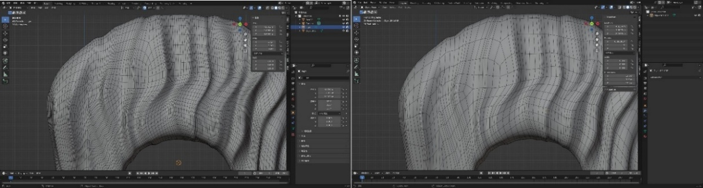
Blender un-subdivide、補面與封閉處理Rhino / BIM
2:00
Rhino 與 Revit：曲面重建、定位與資訊化
Rhino 負責曲率與分件，Revit 負責結構基準、座標對位、施工圖與 IFC 語意。
- Sub-D 維持造型語彙並控制曲率連續
- 分件邊界需符合模具、運輸與安裝限制
- BIM 模型成為鋼構、曲面與現場資訊的共同基準
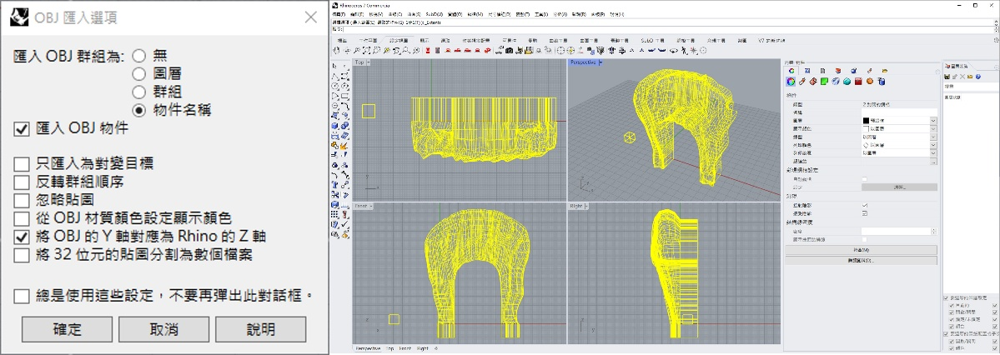
Rhino / Revit 中的曲面、分件與施工圖整合Case Layer 3
3:00
材料落地層：從模具測試到直塑工法
大型自由曲面在真實工地中不只看精度，也要看成本、工期、吊裝與現場偏差吸收能力。
- 小型 3D 列印降低造型溝通落差
- 大型 3D 列印與保麗龍陰刻在工期與現場適應性上受限
- 直塑工法成為較能吸收現場偏差的落地策略
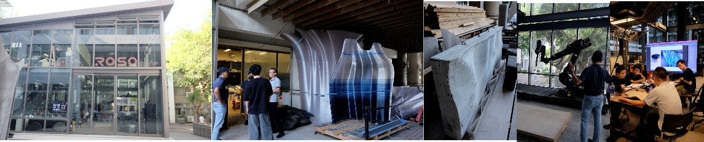
模具、現場與工法測試Segmentation
2:00
數位分割：把連續曲面轉成可施工單元
數位分割不是簡化造型，而是把曲率、轉折、厚度與運輸限制轉譯成現場可執行語言。
- 分件尺寸需符合板車、吊裝與現場操作限制
- 轉折線與剖面線提供工匠找形基準
- 厚度約 1.5 至 3 cm，需同步考慮補強肋
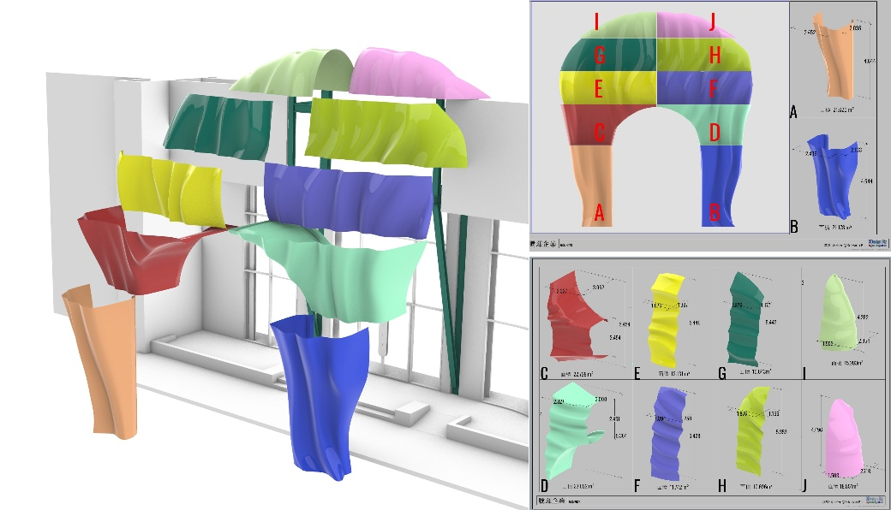
自由曲面分件、色塊與施工單元規劃Site Reality
3:00
現場偏差：鋼構移動 15 cm 與高度差 10 cm
自由曲面會放大任何結構基準偏差，因此 BIM 檢核與直塑工法的彈性成為關鍵。
- 鋼構位置橫向移動約 15 cm，若未發現將造成外殼錯位
- 預計加高地坪 10 cm 吸收高度差，避免大規模返工
- BIM 的價值在於提前辨識跨工項矛盾
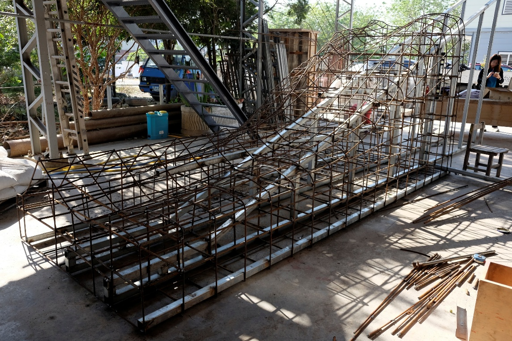
現場鋼構與基準檢核Process Learning
2:00
工程節奏：6 個月建立工法，1 個月完成量產
第一件單元建立曲率語言與施工邏輯，後續 11 件單元才得以快速複製。
- Unit 01 是工法建立期，吸收模型轉譯與現場偏差
- 後續單元進入流程複製期，施工節奏明顯加速
- 顯示數位分割與直塑流程能形成可複製工序
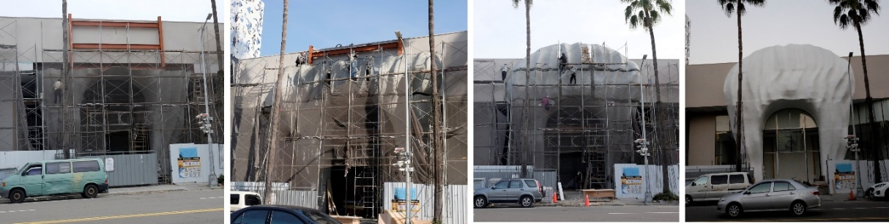
現場單元製作與安裝進度Result
2:00
結果：AIGC-BIM-GRC 可形成可落地的整合流程
本研究證明 AIGC 的價值不在單張影像，而在於被整合進可驗證的建築資訊流程。
- AIGC 提升前期造型探索與語意擴張效率
- BIM/IFC 提供座標、構件、屬性與施工圖的共同基準
- GRC 直塑工法回應自由曲面與現場誤差
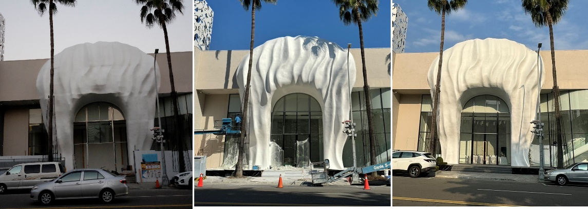
最終入口完成狀態與施工成果Contribution
2:00
研究貢獻
本研究補足 AIGC 建築應用從概念到施工之間的流程斷點，並提出可被後續研究延伸的開放式框架。
01學理貢獻：提出 AIGC-BIM-IFC-GRC 的流程化論述
02方法貢獻：建立 OABIF 與可檢核的流程指標
03實務貢獻：以雅園會館案例展示自由曲面入口的實作路徑
04展示貢獻：為後續 Web3D、MCP 與 BIM 4D 展示建立基礎
Limitations
2:00
研究限制與後續研究
本研究以單一案例驗證流程，後續可擴展至多案例、更多材料、即時 Web3D 檢核與 MCP 自動化。
01AIGC 與 BIM 工具快速演進，研究結論具有時效性
04後續可串接 Web3D、ifc.js、MCP/Bonsai 與 BIM 4D
Defense Q&A
1:00
口試答辯預備題
最後用可預期問題收束，讓 Q&A 回到研究可驗證性與貢獻。
01AIGC 是否真的參與設計，還是只做視覺輔助？
02為何不用單一 BIM 軟體完成，而要採開放流程？